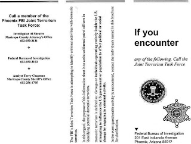

Draped across the throat of our nation like a lank noose about to be pulled taut is a system of 102 Joint Terrorism Task Forces (JTTFs). These entities, which could properly be called homeland security soviets, combine state and local police with FBI Special Agents, covert operatives from the CIA, personnel from various directorates of the Department of Homeland Security, and investigators from the IRS.
The FBI, which is the lead agency for domestic counter-terrorism and spends about two-thirds of its advertised $4 billion budget on terrorism-related matters, has assigned 2,000 agents to the various JTTFs. Digging a bit deeper into the FBI's budget, Professor Alexandra Natapoff of Loyola Law School (Los Angeles) discovered that the Bureau maintains an army of at least 15,000 “confidential informants”; the Drug Enforcement Administration admits to having 4,000 snitches on its payroll. But the number of informants working directly for the Feds is probably only a tiny fraction of the entire stukachi* population, given the uncounted masses of snitches working for state and local police agencies.

Weird? Sure. A terrorist? Well ... no: Clinton Udet Picknert was arrested by a Joint Terrorism Task Force late last year for shining a pocket laser at airplanes as they approached an airport in El Paso. That's cost-effective law enforcement!
I'm beginning to suspect that the second most important purpose of the “war on drugs,” the first being the creation of a self-replenishing revenue stream for the Regime, is the generation of a similarly self-replenishing pool of potential informants. Drug offenders, both petty and prodigious, make terrific snitches, and even better provocateurs.
The vast and growing snitching subculture, notes Profess Natapoff, is one in which “secret negotiations lead to the application of secret rules in which crimes are forgiven, or resurrected, by state actors without defense counsel, judicial review, or public scrutiny.” Many black communities “are being infused with snitches and ... informing has become a way of life. Active informants impose their criminality on their community, while at the same time compromising the privacy and peace of mind of families, friends, and neighbors.”
Most snitches are free to commit certain “authorized” crimes, and many quite predictably commit various “unauthorized” crimes, as well. The system is constructed so as to attract not only common criminals, but also a certain breed of nihilist. Natapoff explains that in the snitching system, “the individual willing to sacrifice friends, family, and associates fares better than the loyalist.”
This is entirely predictable, since snitches work for the State, an idol that will countenance no contending loyalties.
In previous installments, we've examined how the Regime frequently deploys “Cooperating Sources” as provocateurs to manufacture supposed terrorist threats. In a lengthy and exceptionally well-researched investigative piece, the current issue of Rolling Stone (of all things) describes, in detail, how the 102 FBI-directed JTTFs act as a federal “Fear Factory” by “using paid informants to cajole and inveigle targets ... into pursuing their harebrained schemes.”
A potent illustration is provided by the career of William Chrisman, aka “Jameel,” a “Cooperating Source” who helped entrap a pathetic, homeless schlep from Rockford, Illinois named Derek Shareef. In November 2006 Mr. Shareef was a socially maladjusted 22-year-old American Muslim working as a clerk in a video game store. He didn't have a car or a permanent address, let alone military training or the means to acquire weaponry or explosives.
One day, “Jameel” showed up at Shareef's video store and struck up a conversation. Shortly thereafter Shareef moved in with his new “friend” and his three wives, who nurtured whatever radical impulses dwelt inside the young man's heart. At every opportunity, “Jameel” encouraged Shareef to indulge in jihadist fantasies, some of which displayed (as Rolling Stone correspondent Guy Lawson points out) “an ambivalence unusual in a suicide bomber hellbent on murdering civilians.” For instance: When “Jameel” asked about a “time frame” for an attack on a local government building, Shareef suggested the Christmas holidays, when potential victims would be scarce. “Hell, we ain't gotta hit nobody – just blow the place up,” Shareef pointed out.
But this wasn't sufficient for “Jameel”'s designs. He continued to cultivate radicalism in his hapless target, marinating him in talk of violent jihad and hatred for America and the Jews. At last the two of them settled on a plot to set off hand grenades at a local shopping mall. Shareef was arrested “without incident” in a parking lot where he expected to trade stereo speakers for a handgun and four hand grenades.
In the federal indictment, the hand grenades Shareef was manipulated into seeking were referred to – without irony – as “weapons of mass destruction.” Last November he pleaded guilty to that charge, and faces the prospect of 30 years to life in prison. The headline of a typical story about this episode claims that an “FBI sting thwart[ed]” Shareef's plans. In fact, there was no mall bombing plot until Shareef fell under the influence of FBI “Cooperating Source” William Chrisman.
The FBI, perhaps embarrassed by the thinness of its case against Shareef, insists that he was part of a much vaster plot involving his Muslim friend, a Navy veteran named Hassan Abu-Jihaad. The two of them supposedly had detailed intelligence on US naval activities in the Persian Gulf, and allegedly plotted to attack US military facilities in Arizona and San Diego.
Abu-Jihaad, who has been indicted on terrorism-related charges, admits discussing the concept of “defensive Jihad” with Shareef – that is, the idea that Muslims would be allowed to stage attacks on military facilities in the event that they were rounded up and detained therein. It's likely that similar conversations have taken place among some politically disenchanted Americans who are not Muslims. I certainly hope so, in any case.
But as Abu-Jihaad told the FBI's “Cooperating Source” in his case, “I ain't no jihadi.” That informant, whom Abu-Jihadd dismissed as an “idiot” and a liar, was the same “Jameel” who set up Shareef – William Chrisman.
An AP profile of Chrisman paints him as a public-spirited Muslim patriot who “walked into an FBI office and offered his services” after 9-11, and who “has since helped out on several cases.” Oh, sure, there is the small matter of his past as a crack dealer, and (more importantly) his prison term for armed robbery and auto theft. Chrisman, who converted to Islam in prison, has three wives and nine children to support, and a prison record that makes it difficult to find adequate employment. I suspect this is a recipe for just the kind of desperation the FBI finds useful in an informant/provocateur.

This guy didn't agree to become a "Cooperating Source" -- that is, a snitch/provocateur. Look what it got him.
Here's something else to consider. Chrisman's profile – except for the multiple marriages and large brood of children – is similar to that of another prison convert to Islam, Jose Padilla. It's a matter of record that the FBI was seeking to recruit Padilla as an informant and, most likely, provocateur. Padilla refused, and as a result was designated an “enemy combatant,” confined without trial or formal charges for more than three years, tortured, and railroaded into a 17-year prison term after a trial worthy of Moscow circa 1939.
I cannot prove, but I have no doubt, that those recruited as counter-terrorism “Confidential Sources” for the FBI are presented with two stark possibilities. They can do whatever the Feds command – betray friends, incite terrorist plots, set up helpless people – and be paid handsomely, as Chrisman was. Or they can reject that option and receive the Padilla Treatment. And those who choose the first option are probably given frequent reminders that the Feds can subject them to Option Two at any time of their choosing.


Fishing for informants: The front of a tri-fold pamphlet produced in the late 1990s by a Joint Terrorism Task Force in Phoenix. The inside, which lists potential threats (a category that includes various "right-wingers," but not Islamic radicals), is found below. (Click to enlarge.)
In case after case, the Feds have winnowed a handful of eccentrics from Muslim communities and used a provocateur to create a “terrorist conspiracy.” But they're not focusing exclusively on Muslims.

Take the case of Hal Turner, a splenetic neo-Nazi blatherskite who – because of the needs of the ADL, SPLC, and other self-anointed watchdog groups – was able to punch well above his weight as an Internet broadcaster. Turner ceaselessly extolled the putative virtues of “patriotic assassination,” urged the murder of interracial couples and Jews, and generally did his best to foment violence and mayhem.
“If I had to assess my role in the world,” Turner once wrote on his website, “I think I would be ... an inspiration to a whole slew of Timothy McVeighs! I don't make bombs, I make bombers.” Turner insisted that his legions of devoted followers would wreak an awful vengeance on the Feds if they were to “take [him] out.”
As it happens, the Feds apparently did take Turner out, after a fashion: He effectively disappeared a few weeks ago, just after it was revealed that ...
... wait for it ...
... wait for it ...
Turner was actually an informant for a Joint Terrorism Task Force in New Jersey. His handler was an FBI Special Agent named Stephen M. Haug.
Hackers exhumed an e-mail exchange between Turner and Haug (sounds a bit like the title of a canine-enhanced “buddy movie,” doesn't it?) in which the former reported that a death threat against Wisconsin Senator Russ Feingold had been posted on Turner's website. Significantly, Feingold had been identified by Turner as one of 46 senators “who I believed should be removed from office” -- by way of assassination.

The face of a stukach: FBI neo-Nazi informant/provocateur Hal Turner.
“Once again, my fierce rhetoric has helped flush out a possible crazy,” Turner boasted with the puerile pride of a toddler who just went potty all by himself.
More to the point: Once again we see an FBI provocateur behind a purported political murder plot.
All of this savors strongly of COINTELPRO, the FBI's decades-long program of infiltration, surveillance, and provocation intended to disrupt anti-Establishment movements and organizations.
Among those targeted by COINTELPRO, James Ridgeway and Jean Casella recall, were “civil rights, anti-war, student, and women’s liberation groups, as well as the John Birch Society and the Ku Klux Klan.”
“During this period, the bureau tapped phones, opened mail, planted bugs, and burglarized homes and offices,” continue Ridgeway and Casella. “At least 26,000 individuals were at one point catalogued on an FBI list of persons to be rounded up in the event of a `national emergency.' In the end, the Bureau conducted more than half a million investigations of so-called subversives and maintained files on well over a million Americans-all of this without a single conviction for a criminal act.”
The Bureau supposedly got out of this Stalinist business in the early 1970s. Assuming, for the moment, that they actually did, they've more than made up for lost time since the current “counter-terrorism” campaign began in 1995, following the Oklahoma City Bombing – the consummation of a plot, let's not forget, that gestated in Elohim City, a neo-Nazi commune overrun with “Cooperating Sources” in the employ of three-letter agencies.
FBI Special Agent Lundgren told Rolling Stone that the JTTFs are governed by “the Dick Cheney one percent solution”: If there is just a one percent chance that a terrorist incident can occur, “then we have to treat our response as if there were a 100 percent chance.”
Of course, where no evidence of a plot exists, the Feds stack the odds by employing provocateurs who supply the missing “one percent chance.”
UPDATE
In the comments thread below, Pat Hiver ** refers us to the terrific "Winter Patriot" blog, has more information about, and a photograph of, the detestable provocateur and "entrapment specialist" William Chrisman.
The above-mentioned Hal Turner has also weighed in with what appears to be a form letter of sorts defending what passes for his honor. While I certainly want Mr. Turner to have his say, he should be advised that the rules of decorum here don't generally permit unexpurgated vulgarity of the sort found in his missive.

I was informed today that arrangements are being made to sell Liberty in Eclipse through Amazon.com. However... It is available right now through The Right Source.
__
*“Stukach” is a Russian epithet used to describe a secret police informant.
** In the first version of the update, Mr. Hiver was mistakenly referred to as the author/publisher of the Winter Patriot blog.
Dum spiro, pugno!
15 comments:
Wow! Great post! You've done a lot more work with this than most of the bloggers I've checked out.
There's more on Chrisman and Shareef here:
Burned! Meet William Chrisman, FBI Entrapment Specialist
More on bogus terror for political purposes here:
Inadequate Deception: The Impossible Plots Of The Terror War
cheers
Pat Hiver
In the Shareef case, the 'grenades' which the FBI handed him before arresting him were just empty shells with some weighted stuffing inside. Even if he had escaped from the set-up, he couldn't have destroyed a damned thing with those dummy weapons.
What terrorism charges have in common with drug charges is that you can get sent up for the thoughtcrime of talking about it, even if there are no actual weapons or drugs. Certainly this provides lucrative fodder for the prison-industrial complex. But it does nothing to neutralize actual threats.
The 1967 book "Report From Iron Mountain" described the search for an alternative to war as a means of social control: "A viable political substitute for war must posit a generalized external menace to each society of a nature and degree sufficient to require the organization and acceptance of political authority."
Although the book was later claimed to be an elaborate hoax, Nixon's federal War on Drugs initiated in 1970 conformed almost perfectly to its criteria. The War on Terrorism is a rather diabolically brilliant adjunct, as it adds the necessary flash-bang-boom element of drama and random threat which is simply lacking from even mountainous seizures of heroin and cocaine.
These 'wars' have had their desired effect of changing our culture. Thirty years ago, government abuses such as Cointelpro and Watergate were investigated by Congress, and corrective action taken. But abuses of similar scale today -- illegal wiretapping which contravened the FISA act; the Downing Street memos which suggested the possibly treasonous falsification of intelligence -- provoked no comparable Congressional response. Not only has the executive branch seized control, but also in our altered culture, few care.
The U.S. Constitution enunciated what the Founders thought were timeless values. But starting with the 'living Constitution' slogan of decades ago, it has been successfully marginalized as a passing 18th century 'natural rights' fad, now wholly obsolete. A counter-Revolution is complete, and its path is not reversible via the legal processes which got us here. Each door through which we stepped clicked shut and locked behind us.
LIES PUT TO REST!
ACCUSATIONS OF ME (HAL TURNER) BEING FBI INFORMANT TOTALLY DISPROVED DURING LIVE RADIO SHOW!
Southern Poverty Law Center story about me has been totally discredited.
Full details and a complete itemization of facts during a special, January 30 "Hal Turner Show" lay everything out to the public.
Guests on the show also put to rest a slew of other vicious accusations:
Tripp Henderson spoke on the air to confirm who paid for the Knoxville Rally trip expenses and that the U.S. Secret Service raid at Tripp's house was prompted by a report they got from a guy in Canada.
Jay Faber of Aryan Nations spoke on the air to confirm that he and I outed a real FBI informant, James Mazzone the former New Jersey State Leader of Aryan Nations. Mazzone knew his cell phone had been tapped by law enforcement because that's how they Indicted him for drug dealing (THIRD OFFENSE!). Mazzone continued using the tapped phone to conduct Aryan Naations business, knowing the cops were listening, but Mazzone never warned anyone that his cell phone was tapped and that he knew it was tapped.
Steve Churchill from Illinois spoke on the air to confirm that when he got jammed-up by New Jersey cops on a bullshit gun charge that I personally signed for his TEN THOUSAND DOLLAR BAIL and that I was personally on the hook for that money if he skipped-out on the charges.
Not only do I not inform on anybody, I actually have a track record of bailing guys out!
My wife Phyllis came on the air to confirm we are NOT getting a divorce, there is no "physical and mental abuse" and there is no "drug and alcohol problem" as viciously rumored about me on the Internet. The rumor was total bullshit.
Later, when someone claimed it wasn't my wife on the air, but was actually my mother, I put both my wife (in Studio) and mother (from her Pennsylvania home) on the air to talk to each other proving the truth!
I pointed out that my rallies in Kingston NY and Kalamazoo, MI cost those cities $60,000 and $120,000 respectively in police overtime and that there's no way the FBI would have approved anything like that by an informant because the cities would have demanded the money back!
I talked about how many in the Pro-White movement stab others in the back by siding with enemies like the Southern Poverty Law Center.
I also pointed out how PARANOID FREAKS (like this blog) seize upon any source - credible or not - to perpetruate and feed their paranoid delusions.
In fact, there was so much more, I'm putting the archive up for you to hear the full two hour show.
I have pledged four more Hal Turner Shows over each of the next four weeks. If enough money comes in from listeners to cover that expense, you'll get four more shows in March. If not, the end.
When I quit on January 9 it was for a whole slew of reasons outlined in my show. The long and short of it was that I was emotionally and financially spent, my feelings were hurt by the back-stabbing scumbags in the movement and I needed time off.
I've had a few weeks to relax and am willing to bring the show back, but YOU have to pull your weight with the money. No more fucking around figuring someone else will donate. YOU are the "someone else" so put $5, $10, $20, $50, $100 in the mail so we can meet the $1100 expenses for the next month of show. I will post the contributions received on this site so all of you can see.
Archive of Show:
http://www.halturnershow.com/HTS-01-30-08.mp3
old news. you go to a gun show or a militia meeting and there are more feds than citizens.
Hi again.
Sorry for the confusion: I don't publish the Winter Patriot blog -- although I do read it!
I share your opinion of it, though ... and I thought you might be interested in WP's newest, which ties this story together with a few others:
Bogus Terror: Feds Wage War Against The Rule Of Law
cheers
Pat Hiver
The man, Shareef, should've had the SENSE to tell Chrisman to bugger off, to beat it! That he had no interest in associating with the stranger. Since he CHOSE not to do that, he was eaten by the system. I just have difficulty buying into the "entrapment" angle. It's nonsense to me.
That said, when it comes to manufacturing plots, or outright lying, then I agree one is obviously being falsely accused and railroaded. But again, like I said in a previous thread, you can't just "flap your lips" to strangers these days about anything, especially "blowing stuff up," even if in jest, because fabricatiing plots and "evidence" is becoming the rule of the jungle these days. There are informants, anonymous tipsters, and neighborhood crows and buzzards (busybodies, gossips) who, if miffed at you or hate you for whatever reason, would like nothing better than observe your residence being raided by the po-leese (sic).
As the Rolling Stone article you quoted says: "To find threats to thwart, the task forces have increasingly taken to using paid informants to cajole and inveigle targets like Shareef into pursuing their harebrained schemes."
You have to admit, Will, one can't "sweet talk" or "disguise" a bomb plot as if it's, say, handing out candy to toddlers. If that was possible, I might see a weak case for "entrapment."
But the reality is that Shareef, regardless of his current station in life, as it's irrelevant, obviously liked the idea of destroying private property all on his own. "Jameel" simply prodded and excited Shareef's already existing thought he had shackled himself with. I've been vehicle-less and w/o a permanent address and with little means in my life, yet I'd be immediately suspicious of a "Jameel" character trying to "cajole" or "inveigle" me to do anything, let alone agree to a bomb plot, however innocuous and "victimless" it may appear.
Is "Jameel" a corrupt misfit and loathsome character? Absolutely, but there are a hoard of these character types in the populace as you even pointed out; nevertheless, that doesn't lessen Shareef's culpability in agreeing to collaborate in destroying another's personal property. There's a huge gulf between merely talking about "blowing stuff up" and plotting to actually destroy another's personal property. IF that's what occurred and, according to this exchange, it seems it did:
"I swear by Allah, man, I'm down for it too," Shareef said. "I'm down for the cause. I'm down to live for the cause and die for the cause, man."
When Jameel got his car back from the garage, the two men went to case the mall.
"If you ever wanna back out . . . 'cause, you gotta let me know," Jameel said. "I'm checking your heart now."
"I'm down," Shareef said.
"We ain't gonna get caught," Jameel assured him. "Don't worry."
"I'm not worried about getting caught," Shareef replied. "Not alive."
...then Shareef needs to be held accountable. What that would entail is another matter.
One has to be able to evaluate or at least get a quick snapshot of another's character upon meeting them, especially one who seems so strangely and unusually interested in you for whatever as of yet unknown reason. That would immediately raise red flags with me anyway.
Didn't Shareef ask any questions of "Jameel" upon meeting him and gauge his responses? Then again, perhaps if one is a gamma male, being "entrapped" so to speak might be possible I reckon. I'm just a hardcore cynic and skeptic as it is so I'm not easily taken in even for seemingly innocent collaboration or a simple business exchange, never mind a "harebrained scheme" like a mall bombing plot.
BTW, Will, here's another drug raid gone wrong, except this time an officer died rather than the resident.
This one was in my neck of the woods. You may or may not want to examine this case. At a glance, it looks to me like it could be a plausible self-defense case, but of course when a cop with a search warrant is involved, regardless of the circumstances, a self defense argument, however plausible, is rarely accepted by a jury.
Because, you know, Leviathan agents are looked upon as "gods" of righteousness and all that...sigh.
Will - I just read your book, and if you will permit me a few comments...
I had little or no interest in, nor knowledge of, politics until I was 16, and a sophomore in High School. I had a very liberal World History teacher (Ron Tinsman – one of those teachers you remember your whole life.) One day I came home from school and repeated something he said. My father said, no, no, no, that's not even close, and then told me the truth. I don't even remember what the subject was, just what it led to. From that point on, what often happened was that I would go back to school and repeat what my father said, the teacher would say something in reply, I'd tell my father, he'd tell me the real story, and the cycle started all over again.
It was a great class, and I loved "debating" my teacher. What was cool was that even though he was liberal, he didn't hold it against you that you had a different opinion than he did, which is rare. I got an A in that class all year, yet I argued with the teacher the entire time. It was great fun. Sometime soon after this all started, my father gave me a book, and said if you really want to know what's going on, here's what you need to read. The book was None Dare Call it Treason, by John Stormer. It was written prior to the '64 election to provide support for whoever the "good" candidate turned out to be (Goldwater, although that wasn't known at the time the book was written.) It was a great book at the time to explain the "basics" of what was going on in politics, the media, education, etc. – the liberal slant, corruption in the government, communist infiltration, and so on. That was the book that got me started. I was fascinated, and couldn't put it down. I think he gave it to me on a Friday night, and Saturday he sent me out to clean the car, but I was in the car reading the book instead of cleaning the car.
Jumping forward a few centuries (well, it seems like it), we now have Will's new book, Liberty in Eclipse. Someone has rightly compared it to None Dare Call it Treason. And just like Stormer's book opened the eyes of many of that generation, Will's book is going to do the same for this generation.
Ron Paul is this country's second Thomas Jefferson. And whether he wins or not, our task is far from over. No matter who wins in November, we still have a Sisyphean battle ahead of us, because eternal vigilance is the price of liberty. As Ludwig von Mises wrote years ago in his great book, Socialism,
"Everyone carries a part of society on his shoulders; no one is relieved of his share of responsibility by others. And no one can find a safe way out for himself if society is sweeping toward destruction. Therefore everyone, in his own interests, must thrust himself vigorously into the intellectual battle. None can stand aside with unconcern; the interests of everyone hang on the result. Whether he chooses or not, every man is drawn into the great historical struggle, the decisive battle into which our epoch has plunged us."
One way you can you can carry out your share of that responsibility is by reading Will's book, and then buying and passing on copies to your friends, family, and people of influence. Write a letter to the editor of your local paper. Send a copy to your Congressman and then hold his feet to the fire.
While it is hard to condense the message of Will's book into a paragraph or two, let alone a sentence or two, there are a few sentences in his book that do a pretty good job of summarizing the message:
"To revisit a point made at the beginning of this book: No terrorist attack can possibly be as deadly as government unchained from its constitutional restraints…We must not forget that under existing laws, policies, practices, and official assumptions – a relatively small portion of which is examined in the foregoing chapters – everything necessary for the practice of totalitarianism is in place. In principle – if not in practice – the regime that rules us is totalitarian in nature. Whether practice catches up to principle is the chief question that should occupy the time, and inspire the efforts, of freedom-loving people."
That's it in a nutshell. And, as if to illustrate that point, this article in today's New York Times couldn't be more timely: http://tinyurl.com/ysobya
3 February
I'll be a busy fellow, with a case of Will's books to get read.
http://www.lewrockwell.com/blog/lewrw/archives/019138.html
Another reason why being taken alive, even by local police, now, is no longer an option. If people haven't gotten the message yet, it's time to become self sufficient and become an expert in self defense, against any thugs, no matter what garb they are wearing.
Louis
Makes me ashamed that I attended William Chrisman High School.
Wow, William. I thought Turner was full of shit when he boasted about being an FBI informant.
I'd be remiss in my responsibilities if I didn't make some hay out of this.
I think this is one of your best posts ever, dude. You're the kind of conservative I can work with.
Thanks, JP. I sure hope things are going better for you.
Things are going to get really ugly, really soon -- even without the kind of "help" we're likely to get from troublemakers on the government payroll. To be blunt, I'm really not looking forward to the next couple of years....
You take care, my friend.
It seems that Hal Turner is currently in Federal custody. Below is a press release from his attorney (Source: http://family-of-hal-turner.blogspot.com/):
The following is the press release that the attorney released on 7/30/2009:
FOR IMMEDIATE RELEASE
JULY 30, 2009
FOR FURTHER INFORMATION CONTACT: Michael Orozco, Attorney at law
973-735-2683
ARREST OF RADIO HOST HAL TURNER
Chicago, IL –
On June 2, 2009, Hal Turner, sitting in his home in New Jersey, opined on his web site that the recent opinion of three judges in the Seventh Circuit was unconstitutional. That opinion was legally protected free speech pursuant to numerous rulings by the U.S. Supreme Court.
Three weeks later, the FBI executed a search warrant on his home in North Bergen. Nothing illegal was found, yet Mr. Turner was arrested and charged with violating a federal statute which makes it a crime to threaten to assault or injury a judge in retaliation of the performance of their official duties. Mr. Turner never, under any circumstances, meant this communication to be seen as a true threat to these judges.
Since his incarceration Mr. Turner has been subjected to de-humanizing conditions at jail. This is not justice; this is the persecution and mistreatment of Mr. Turner through administrative means. He has been denied medical treatment; he has been denied access to a means to contact his family for weeks, as well as his attorneys; he has been declared a high level threat despite the fact that he has never committed an act of violence, and; had caps on his teeth removed as he was told they could be used as a weapon.
Currently Mr. Turner’s blood pressure has reached an alarming number, yet he has received no medical attention. The pleas from his family to the jail have gone unanswered.
At the July 28th, 2009 bond hearing, Magistrate Judge Ashman gave Mr. Turner’s attorneys more time to produce evidence of his prior acts while working as an FBI informant and immediately after which resulted in numerous lives being saved and sophisticated military hardware from being placed into the black market.
What goes around comes around, stukach!
Hal Turner was found guilty today (at his third trial).
Post a Comment